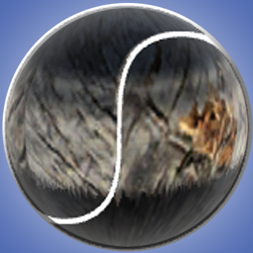
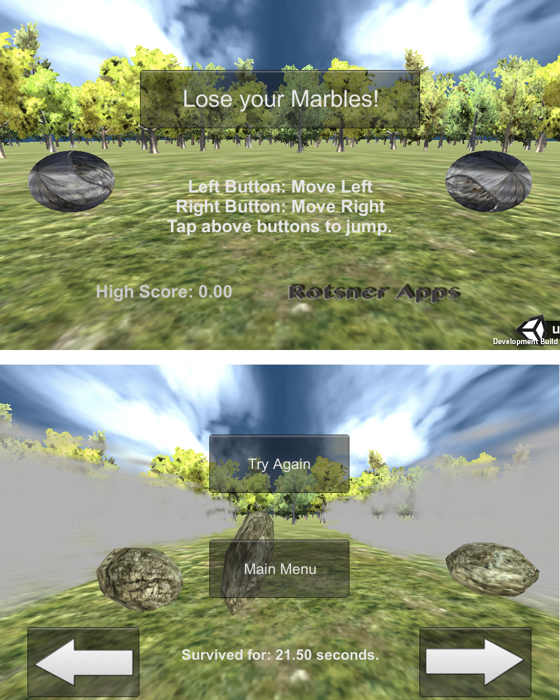
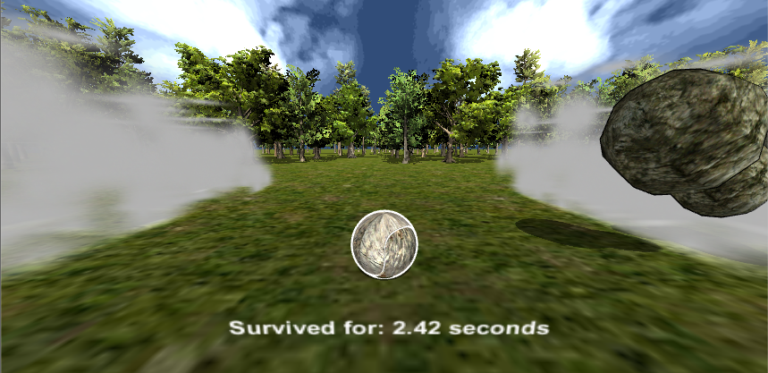
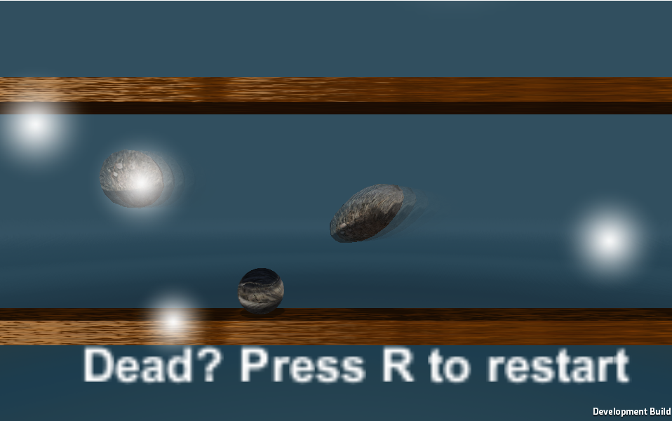

Spring Break 2015 - Project Unity

Description: I have, for a long time now, had the desire to build and learn about the Unity3D platform. I have finally had the time this week to start looking into it. As a result I have decided that it will be my project to build a game in my spare time. The game? It will be called Rocks and Marbles. Essentially what will happen is that the user will be in control of a marble and they must try to remain on the screen while being pelted by a random barrage of asteroids/rocks. I will be showing my iterative development builds (probably every 2 to 3 days) until my final project. We will see how it goes. All of my development builds will be run in the Unity Web Player. If you wish to play any of them then you will need to download them at
http://unity3d.com/webplayer. Thanks for reading and I hope you enjoy!
Build 4
"The Android Shift. Relatively final build."
March 18, 2015: Officially branched into making things better on Android. Added UI, and the ability to keep your highscore. Highscore functionality only works on android, and not on the web since I am developing for an Android release. Additionally I got certain bugs fixed and now it is a much more fluid experience. The last bit to work on is optimizing the application on the backend so it does not waste unneeded battery. Other than that I am pretty happy with where I am going to leave it after the next build (unless a certain inspiration hits me) since I have to get back to school work.
Click the image below to play this build.

Click here to download the android build.
Update: Optimized it for battery best I could in a crunch. Due to constraints with school work I am going to release it to the app store with the updated changes, and any future updates (such as the game modes I have in mind) will be done through the Google Play store.
Build 3
"The Marble--It explodes."
March 18, 2015: Today's build is relatively the same for the web, but on android it now allows for a touch interface ( right now the buttons are placeholders until I get into photoshop and make some ). Also, when the marble hits the steam-smoke it errupts into fire, and the game pauses and gives you how long you have survived for. Slowly, but surely, I am learning the touch API so I can transition things over to Android (and maybe iOS).
Click Here for the Demo on PC.
Click here to download the android build.
Next up: Revise the introduction screen. Sound effects. Background Music. Enhance touch experience
Build 2
"Improved Physics System and World Creation."
March 17, 2015: In this build I decided to tackle the main issues I had in the first build. Primarily forcing a game over function, and then optimizing the overall game. Once this was completed I realized I should probably work towards improving the world so I learned terrain and lighting. Finally I perfected the models for the marble, and the rocks, and added a small intro screen to start the game. I have also added touch functionality for the end result which is the android game.
Click the image below to play this build.

If you would like to play the android app version of the game then visit this page on your android device and
CLICK HERE to download the apk and install it.
Next up: Build out the introduction screen with tap/clickable buttons. Add an exploding marble when you hit the steam. Sound effects. Background Music.
Oh... and I think I am gonna name the game "Lose your Marbles" (at least thats my next thought for the App Title)
Build 1
"Icon and Base Game."
March 16, 2015: The first release (V0.1) is as basic as it can get. You are a marble and rocks are pushing you off the screen in increasing difficulty. If something happens where you are no longer on the screen. You press R to restart.
Click the image below to play this build.

Next up: Add an introduction screen. Game over. Scoring functionality. Improved "Rock AI". Instructions screen.